ALLWAYS · first batch · conceptual microfilmsForaged,
cut by hand.
Each film realises one SCION operator from the conceptual-microfilm family (055–065). Each is cut by hand from shots of public-domain educational, industrial, amateur and newsreel film on movingimagearchive.com, as cached in Cineosis Lab.
These are proofs in progress, not released works. Every film keeps a source ledger, an edit list, the comparison cut its operator asks for, and a forage log of what the archive did and did not return. Eight have had a first round from an independent critic agent; the verdicts and repairs are in CRITIC-ROUND-1.md. No human critic has screened them yet.
SCION 055 · Words — Polysemic Relay
WORDS
45 s · archive footage · critic: pass (qualified) · repaired
One unspoken verb passes from hand to hand through unrelated films: a pencil, a reel, a deck, a breath, a magnet, a crowd, a cable. The word never appears; the notes name it. Watch first.
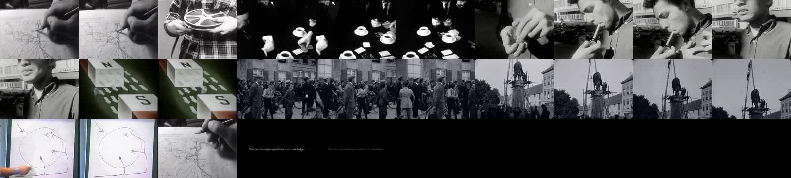
SCION 056 · Symmetry — Imperfect Pairing
SYMMETRY
54 s · archive footage · critic review pending
Two panels side by side, each from a different film and a different decade, first agree on a shared gesture: a man bent over paperwork at a desk, two hands placing small parts, a man in a dark suit with his back to us before a closed door.
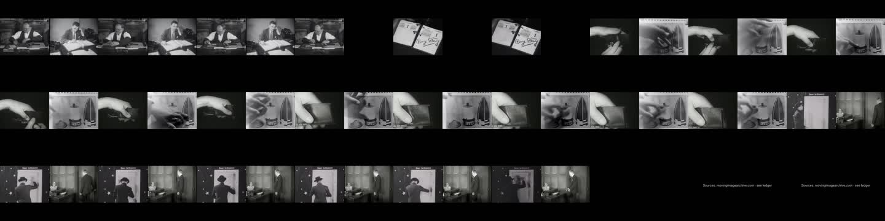
SCION 057 · Moments — Microevent Attention
MOMENTS
53 s · archive footage · critic: inconclusive
Short ordinary events from unrelated films, each kept whole (before, change, after), should feel complete enough to matter. One unusually long hold should change how the viewer watches the next events: a hand waiting next to a fixture before it places a knob.
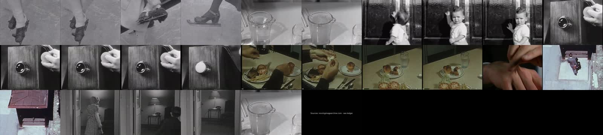
SCION 058 · Laughs! — Audible Contagion
LAUGHS
37 s · archive footage · critic: inconclusive · ethics review open · repaired
Prompt: build a changing acoustic chain from individually situated laughter, letting rhythm spread between shots while keeping the difference between people laughing together and an editor making separate recordings answer one another.
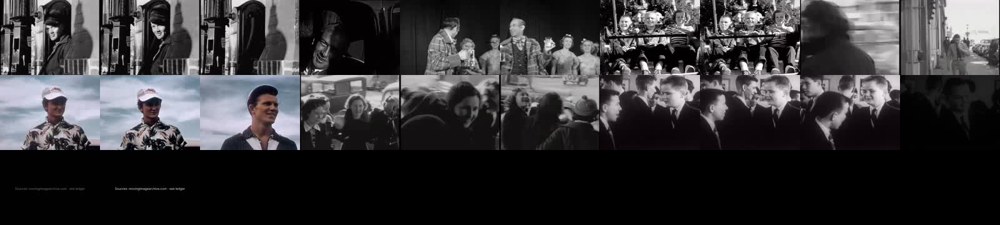
SCION 059 · Ball — Graphic Constancy Across Sources
BALL
43 s · archive footage · critic: pass · repaired
One rim stays still at the centre of the screen while the thing it belongs to keeps changing: a sun, a planet, a lens, a clock, a dial, a shower rose, a speaker, a reel, a wheel, a jet engine. Continuity of form, instability of use. The registration is the film; the control cut shows what it adds.
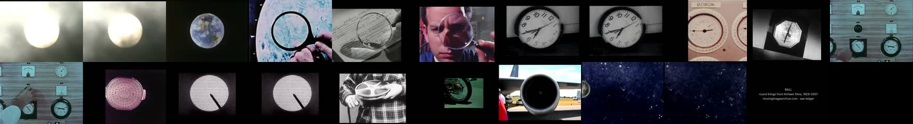
SCION 060 · Losers — Social Position Through Montage
LOSERS
37 s · archive footage · critic review pending · staged 1953 source
A tight view of a huddle of boys reads as private banter around one boy who ends up alone in frame. The source's very next shot, the wide room, shows why the huddle exists. Girls stand in a line along the far wall, the boys are on the other side, and the floor between them has to be crossed.
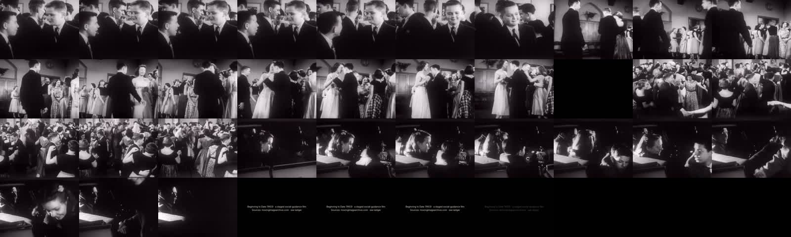
SCION 061 · Matter — Material Affordance Chain [Provisional Reference]
MATTER
65 s · archive footage · critic: inconclusive · diagram now labelled
One material behaviour leads to another through a transformation the viewer can see happen in the shot: pressure that springs back, a fold that stays, a liquid that spreads, metal and chocolate that pour and set, steel that curls when it is cut. The archive has no tabletop sample filmed under controlled loads, so each link is a separate documented action from a different film.
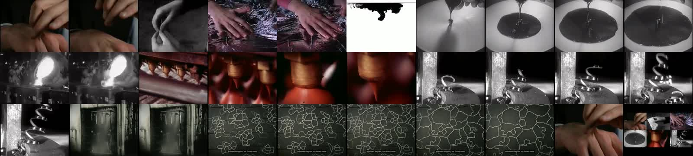
SCION 062 · Colors — Chromatic Chapters
COLORS
50 s · archive footage · critic: pass (qualified)
Colour carries attention across unrelated films. Each chapter goes through different kinds of work: yellow is protective gear and heavy machinery, blue is the sea and the work table where suits are mended, red is packing and unloading. The same hue organises different actions. Two mixed frames act as hinges: yellow machines over blue water, then a crate over blue water swinging toward a red hull.
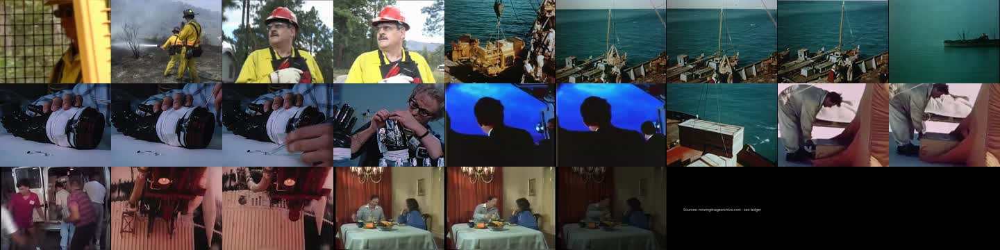
SCION 063 · Breath — Invisible Force, Visible Consequence
BREATH
57 s · archive footage · critic: fail · v2 needs new footage
Make an invisible action legible through its effects, and shape duration around expansion and release — keeping human breath and mechanical air distinguishable.
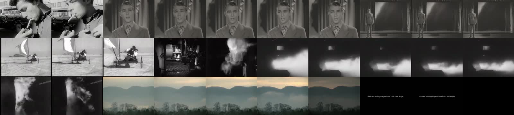
SCION 064 · Parabolas (etc.) — Curves With Different Causes
PARABOLAS
54 s · archive footage · critic: pass
Curves recur across very different causes: a loaded line hanging from posts, a body in flight, a jet of water, a built arch. The film lets these resemble each other first. Afterwards it replays three of them with coloured fitted models whose quality differs: - A. A pan-compensated diver's path: a quadratic-in-time model fits (rms 6.6 px against ±8 px marking error). - B.
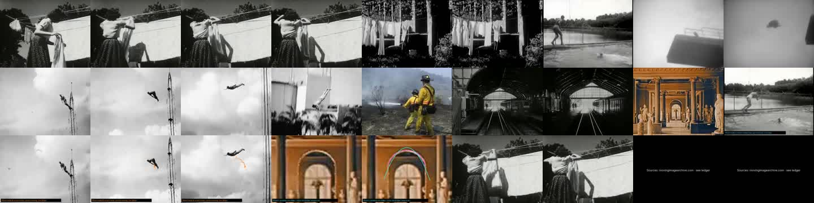
SCION 065 · Five — Parallel Lives, Unequal Details
FIVE
68 s · archive footage · critic review pending
Five people from five unrelated films (a 1970 TV kitchen, an undated victory-garden film, a 1953 posture film, an undated amateur home movie and a 1959 film about barbers) go through the same editorial structure. Each gets an uninterrupted opening action. Then three of them are crosscut at the moment of setting something down. Two return after their practice, each held for a different length.
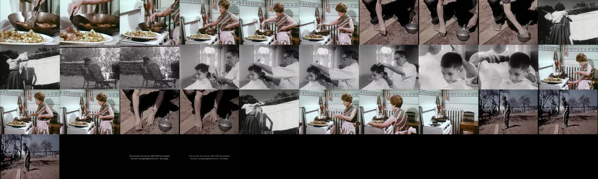